The first screen on a phone

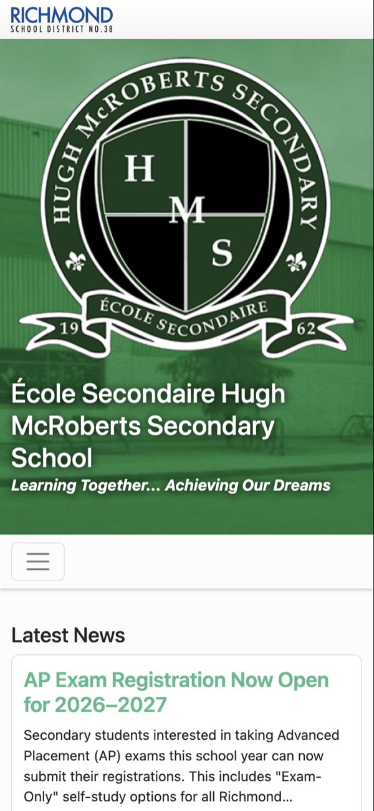

The first screen now shows today's blocks, the next event and a one-tap call to report an absence. Today that number is almost four screens down.
Website redesign proposal
Built only from what our school already has.
Hi Mr. Leslie,
Our school website has a lot of good information, but it is hard to use, especially on a phone. On a phone, a parent who wants to report an absence has to scroll almost four screens down the home page to find the number, and the bell schedule is a picture that is too small to read. I took the site's own pages and built a working preview of a new design. It keeps the crest and every word as they are today, and it stays on Drupal 10, so it can be added as a new theme without moving any content.
Today's site
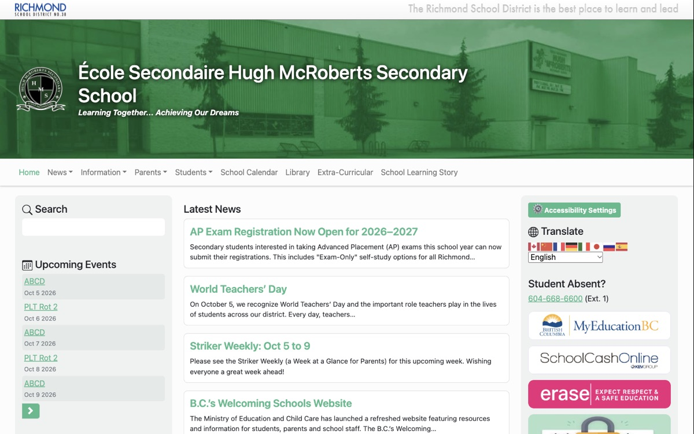
Redesign
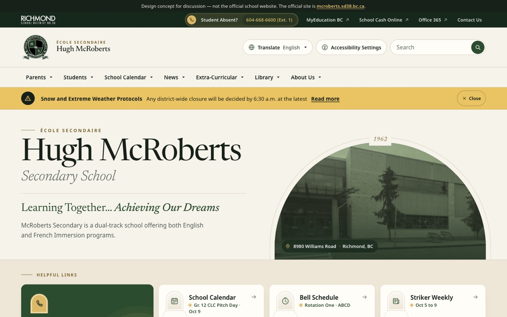
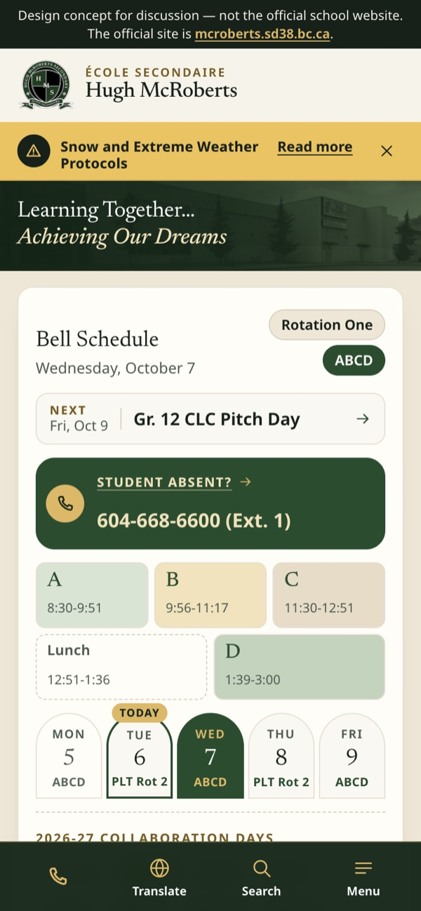
Used exactly as it is: no new colours, no cropping, no redrawing. The site's green comes from the crest.
Every heading, menu label and page uses words that are on our site today. A check compares each page with the live site and finds 0 new words.
The same content, views and blocks. It comes as a new theme plus menu settings, so no content has to move.
Going back is one setting: make the current theme the default again. Today's menu can be saved first and put back too.
Seven menus, named after what people come for, each with the most requested pages first. A slim bar on every page holds the absence line and the main sign-ins.
On every page
Each pair shows the same view: today's site on the left, the redesign on the right.

The first screen now shows today's blocks, the next event and a one-tap call to report an absence. Today that number is almost four screens down.
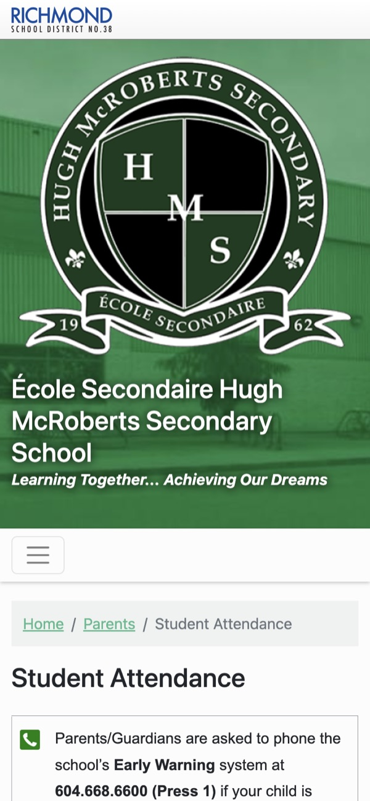
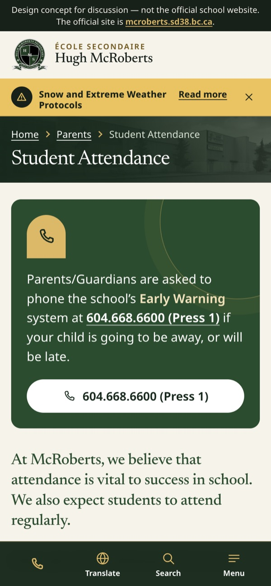
The page starts right away, and the Early Warning number is a button that calls it. Today the title starts near the bottom of the screen and the number can't be tapped.
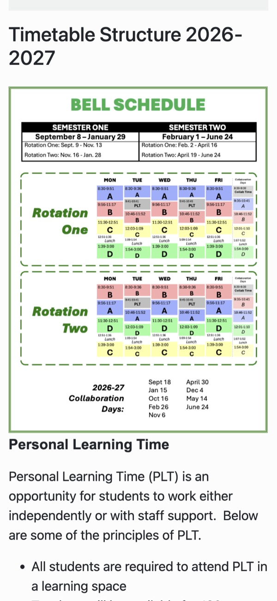
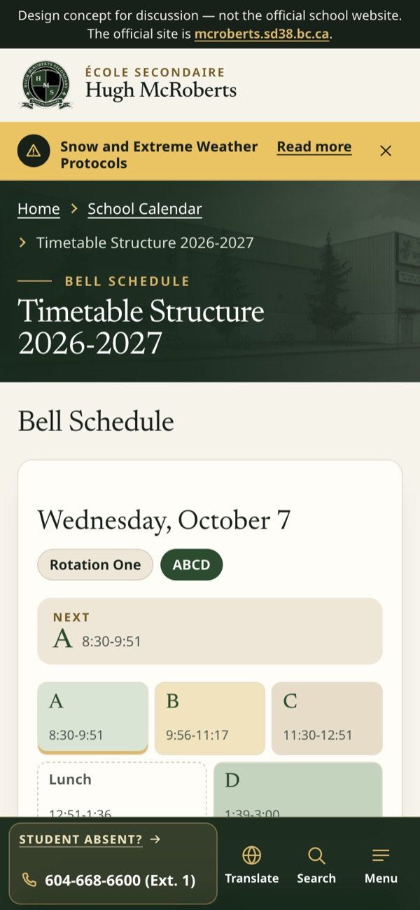
The timetable is real text and tables that show today's blocks and what comes next. Today it is a picture, and on a phone its times are about 3 pixels tall.
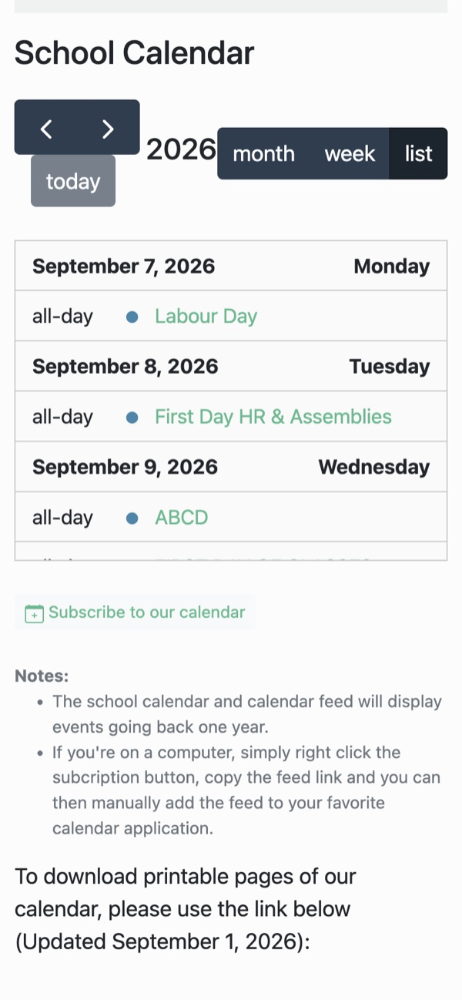
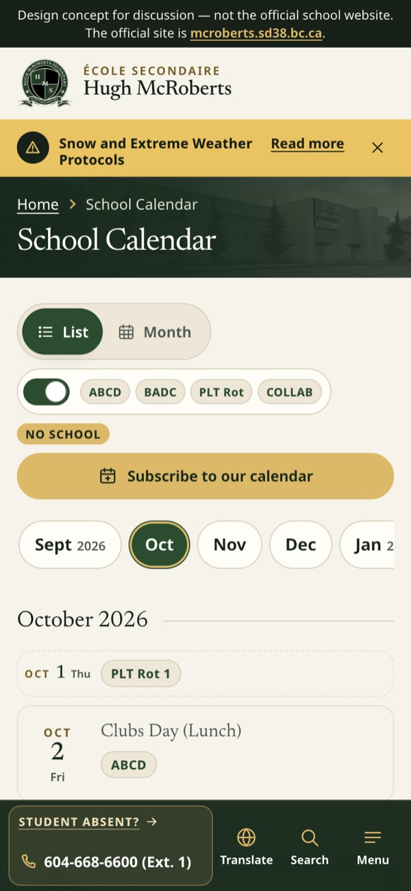
The calendar is a full-width list by month, No School days are marked, and the timetable codes are small tags you can hide. Today it is a small scroll box that starts in early September.
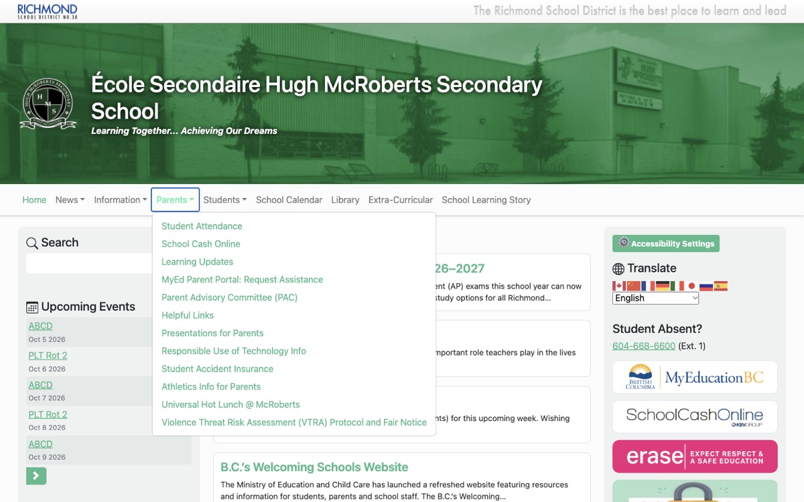
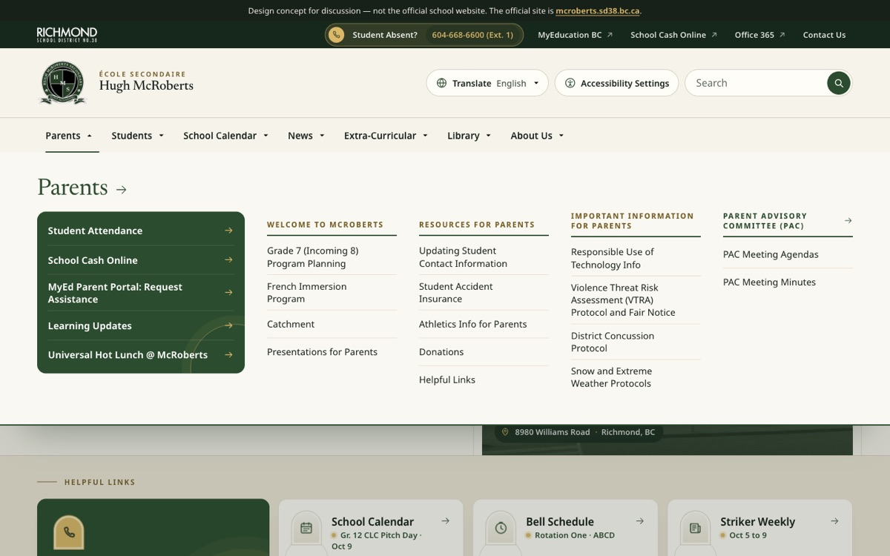
Each menu opens one clear panel, with the most requested pages first and the rest in labelled groups. Today some pages, like Strikers Athletics and Club Directory, are not in the menu at all.
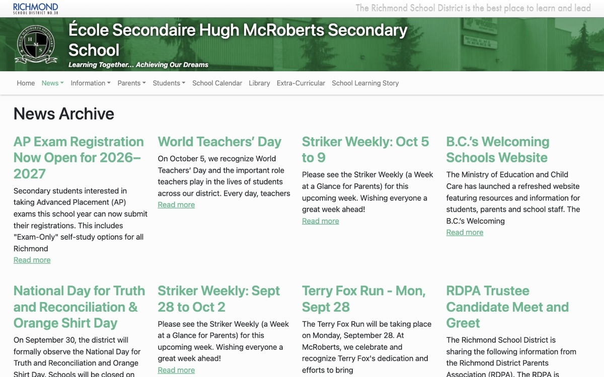
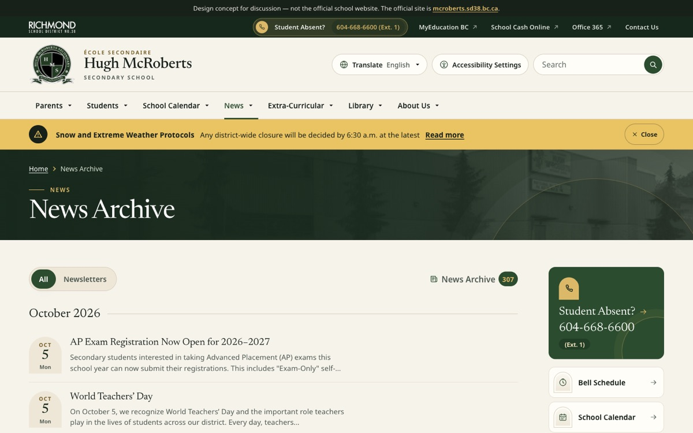
Every story shows its date, and the newsletters have their own filter. Today the news cards have no dates.
Measured with Lighthouse on a phone and from the files themselves. The home page was already quick (about 1.1 seconds on a slow phone connection), and nothing on it jumps while it loads. That stays the same. The big gains are in accessibility and in the heaviest files.
| Measure | Today | Redesign |
|---|---|---|
| Lighthouse accessibility, home page on a phone | 87 | 100 |
| Lighthouse accessibility, Student Attendance on a phone | 91 | 100 |
| Lighthouse best practices, both pages | 100 | 100 |
| Contrast of link text (4.5 : 1 is the minimum) | 2.4 : 1 | 8.8 : 1 |
| Pages with more than one main heading | 183 of 191 | 0 of 139 |
| Pages where the absence number calls with one tap | Home page only | All 139 |
| Career Centre photo | 24.2 MB | 363 KB |
| Heaviest page (a story with images pasted into the text) | 3.9 MB | 69 KB |
| All images on the site | 31.7 MB | 7.3 MB |
Lighthouse SEO is not compared: the preview is set to stay out of search engines on purpose.
We compared McRoberts with 12 of the best school websites of 2024 to 2026, from BC to the UK, on a scale of 1 to 5. I scored the redesign the same way. Those scores are mine, so please judge them on the preview.
| Area | Today | Redesign | Best of the 12 |
|---|---|---|---|
| Top tasks for parents and students | 2 | 5 | 5Eastside Catholic |
| Menu and site structure | 3 | 5 | 5Stevenson, Saint Xavier |
| Header and school identity | 3 | 5 | 5Brighton College, Saint Xavier |
| Home page story | 2 | 4 | 5Saint Xavier, Webb School |
| News | 2 | 4 | 4Walnut Grove, Stevenson |
| Events and calendar | 2 | 4 | 4Westdale, Fairfax Academy |
| Alerts and closures | 2 | 4 | 4Eastside Catholic, Walnut Grove |
| Look and feel | 2 | 5 | 5Brighton College, West Island College |
| Photos | 2 | 3 | 5Brighton College, Webb School |
| Accessibility | 3 | 4 | 4Shenton College, James Ruse |
| Translation | 3 | 4 | 5Fort Smith |
| On a phone | 2 | 4 | 4Eastside Catholic, Westdale |
| Total, out of 60 | 28 | 51 |